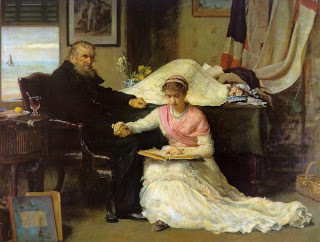

Makkot 24 - God Created Many Mitzvot in Order to Provide Merit for the Jewish People
The total number of commandments in the Torah is 613. This can also be seen from the verse " Moses commanded us the Torah as inheritance ". The numerical value of the word Torah is 611, plus the two commandments pronounced by God Himself make up 613.
King David established 11 ethical and moral requirements on which to base the 613.
Isaiah came and established them on six : "Walk with righteousness, speak with fairness, spurn extortionate profit, avoid suspicions of taking a bribe, seal the ears from hearing of bloodshed, and shut the eyes from seeing evil."
Michah established them on three : do justice, love kindness, and walk humbly with your God.
Habakkuk established them on one: " The righteous person shall live through his faith ".
Art: John Everett Millais - North-West Passage